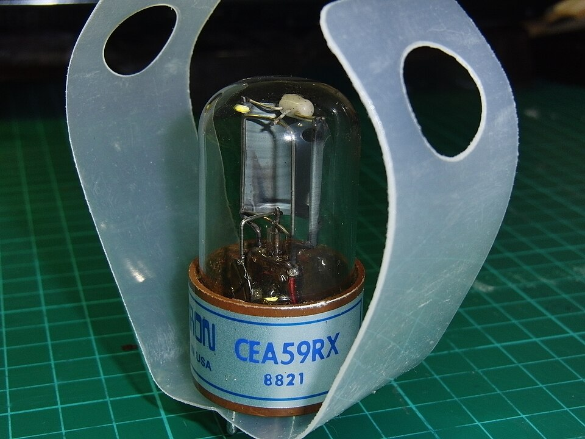
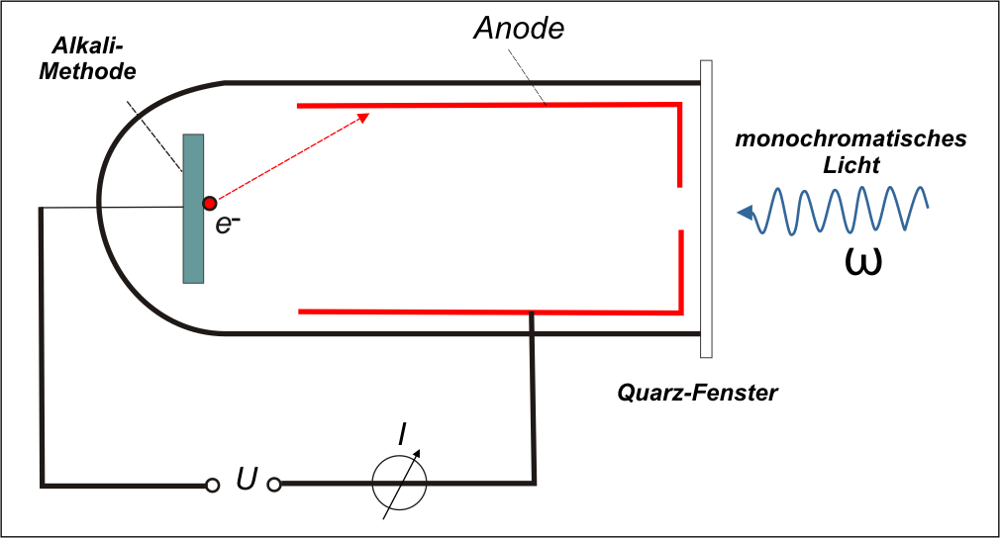
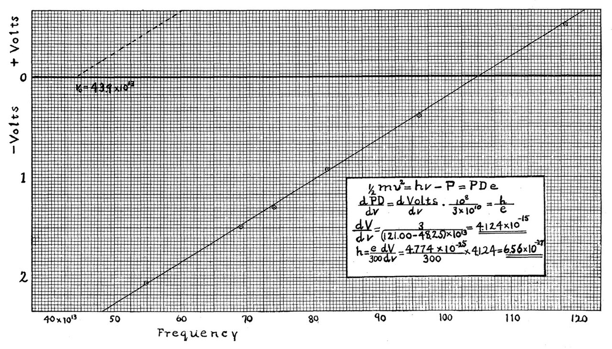

※ 말풍선은 과학사 사실을 바탕으로 쉽게 풀어 쓴 학습용 글이며, 실제 발언이 아닙니다.
※ 폰에서는 장면을 좌우로 밀어 보세요. 실제 장치와의 비교는 🔍 실제와 비교에 있어요.
미지 금속 X의 일함수는 숨겨져 있습니다. 여러 진동수에서 V₀를 측정해 h와 한계진동수 f₀를 구하고 Φ = h·f₀로 정체를 밝혀보세요.
파동설 예측: 진폭이 커져 전자의 최대 운동에너지 Kmax가 커진다.
실제(입자설): 광자 개수만 늘어 전자 수(전류)는 늘지만 Kmax는 변하지 않는다.
파동설 예측: 약해도 오래 쬐면 에너지가 쌓여 전자가 나온다.
실제(입자설): hf < Φ면 아무리 세고 오래 쬐어도 전자가 하나도 안 나온다.
금속에 진동수 f인 빛(광자 1개의 에너지 E = hf)을 비추면, 광자 하나가 전자 하나에 에너지를 준다.
E = hf, Kmax = hf − Φ (hf ≥ Φ일 때만 방출)
일함수 Φ는 전자를 금속 밖으로 꺼내는 데 필요한 최소 에너지이고, 한계진동수 f₀는 hf₀ = Φ를 만족한다.
방출된 전자를 역방향 전압으로 막으면, 가장 빠른 전자마저 멈추는 전압이 저지전압 V₀다.
eV₀ = Kmax = hf − Φ → V₀ = (h/e)·f − Φ/e
여러 진동수에서 V₀를 재어 V₀–f 그래프를 그리면 직선이 되고, 그 기울기가 h/e이므로 플랑크 상수 h를 구할 수 있다. x절편이 한계진동수 f₀다.
※ 진동수 단위는 ×10¹⁴ Hz, 에너지 단위는 eV로 표시한다.
| # | f (×10¹⁴) | V₀ (V) | 금속 |
|---|
※ 한 금속(같은 Φ)으로 서로 다른 진동수 3점 이상을 측정해야 직선이 잘 나옵니다.
위 시뮬레이션의 장치는 학교 실험실에서 쓰는 광전효과 장치(수은등 + 간섭 필터 + 광전관 + 전원·전압계·전류계)를 본뜬 것이에요. 부품마다 실물과 짝지어 보세요.

A B C D

이미지 출처와 라이선스: 광전관 사진 — GOKLuLe 盧樂, CC BY-SA 3.0(라이선스), 이 사이트에 그대로 게시(크기만 줄임). 구조 그림(Gernheim)·밀리컨 그래프는 퍼블릭 도메인. 실험대 그림은 일반적인 교육용 광전효과 장치를 본떠 직접 그린 일러스트이며 특정 제품이 아닙니다.
위 시뮬레이션의 ⚡ 저지전압 측정에서 기록한 값이 자동으로 들어옵니다. 노란 칸은 직접 쓰는 부분이에요. 글은 이 브라우저에만 저장되고 서버로 전송되지 않습니다. 이름·학번은 인쇄한 뒤 손으로 적으세요.
| # | f (×10¹⁴ Hz) | V₀ (V) | 금속 |
|---|